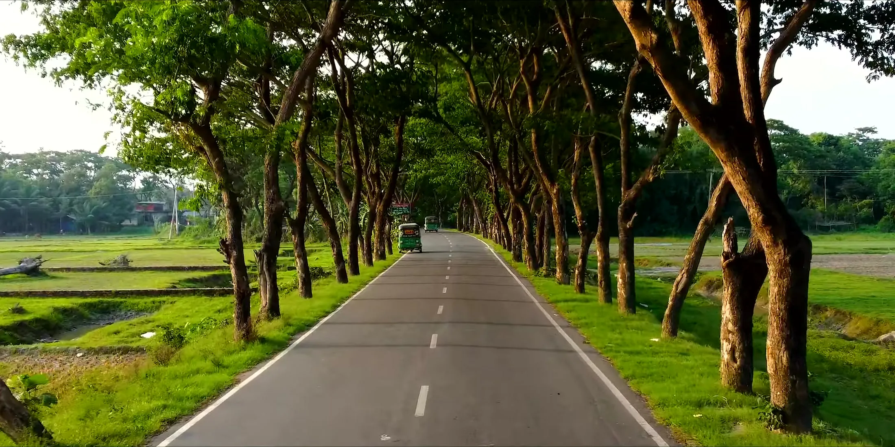

Bangladesh runs three routes for tourists: no visa at all, a visa issued on arrival at the airport, or a visa applied for before you travel.
Which one applies depends only on the passport you are travelling on. Choose your country below and you get the length of stay, the fee, the documents and the order to do things in.
Visa on arrival works at three airports only. If you are crossing by land, you need a visa in your passport before you get to the border.
The busiest land crossing is Benapole, opposite Petrapole on the Kolkata road. Tamabil connects to Shillong in Meghalaya. Crossings from Myanmar are generally closed to tourists.
A Bangladesh visa gets you into the country. Three of the best places in it have their own rules on top, and one of them changes every season.
None of this is difficult, but all of it needs doing before you book flights.
The Ministry of Environment, Forest and Climate Change now controls who lands on the country's only coral island, under the Environment Conservation Act and the 2023 Saint Martin's ecotourism guideline. The current rules are specific.
Seasons and caps have been rewritten twice in two years. Check the latest notification on the Tourism Board notice board before you pay for anything.
Tour operators and tour guides in Bangladesh have to be registered with the Bangladesh Tourism Board, and both registers are public and searchable.
It takes two minutes to check a company before you send a deposit, and it is the single most useful thing on any government tourism website. Guides carry a registration number. Ask for it.
The trade association, TOAB, keeps its own member list if you would rather start there.
Roads are slow and crowded. Anything you can do by river or rail, do by river or rail.
Launches and ferries. Overnight boats from Sadarghat in Dhaka reach Barishal, Khulna and much of the south. First class cabins are cheap and should be booked a few days ahead.
Trains. Intercity services to Chattogram, Sylhet, Rajshahi and Khulna. Book online or at the counter. Snigdha class is air conditioned and comfortable.
Buses. Everywhere, all the time. The air conditioned coach operators are decent on the main corridors.
Flights. Domestic hops to Cox's Bazar, Sylhet, Chattogram, Jashore and Saidpur cost little and save a day each way.
In town. Rickshaws for short hops, CNG three wheelers for longer ones, ride hailing apps in the cities. Agree the fare before you get in unless the meter is running.
The currency is the taka. Cards work in city hotels and chain restaurants and almost nowhere else.
ATMs are everywhere in cities and rare in the hills and the deep south, so draw before you leave a district town. Mobile money is used constantly by locals but usually needs a local number. Tipping is not obligatory, though rounding up is normal and a guide who has looked after you well should be paid properly.
Check the day's rate against Bangladesh Bank's published figure before you change money at the airport or a hotel. The exchange counter inside the visa on arrival area at Dhaka gives the same rate as outside, which is unusual and worth using.
People here are unusually welcoming to visitors, which is exactly why it is worth not being careless with it.
Ask before photographing anyone, especially women and children, and accept a no. Dress modestly outside beach resorts: shoulders and knees covered is a good default for everyone, and a scarf is worth carrying for mosques. Take your shoes off at mosques, temples and homes. During Ramadan, eat and drink out of sight in daylight. In the hill tracts, remember you are a guest of communities with their own languages and land history, so hire local guides and buy from local shops. In the Sundarbans and at Saint Martin's, follow the visitor caps and the plastic rules. They exist because both places are close to their limit.
Tap water is not drinkable. Bottled or properly filtered only, including for brushing teeth. Street food is excellent and generally fine if it is cooked hot in front of you and the stall is busy.
Personal effects, your camera gear and a reasonable quantity of gifts come in without duty. Gold, alcohol, large electronics and cash above the declaration threshold do not.
The allowances are set by the National Board of Revenue and they are revised, so read the current baggage rules rather than a blog post. Declare what you are carrying if you are unsure. Customs at Dhaka scans everything on the way in.
Bangladesh runs a dedicated Tourist Police unit, posted at the beaches, the hill districts and the main heritage sites. They are used to dealing with visitors and they speak more English than most.
Short answers, no marketing.
A visa on arrival gives 30 days from the day you land. Visas issued by a mission are commonly 30, 60 or 90 days, single or multiple entry, and the clock usually starts when you enter rather than when it was issued. Check the dates printed on the sticker, because the validity date and the permitted stay are two different numbers.
Yes, at the Department of Immigration and Passports in Agargaon, Dhaka, next to the passport office. Expect more than one trip on more than one day, which is why anyone planning to stay longer than a month should get a longer visa at home instead. Overstaying is fined at 200 taka a day for the first fifteen days and 500 a day after that, and you also pay for a fresh visa at the full advance rate rather than the arrival rate. Settle it before you get to the airport.
Ask your nearest Bangladesh mission about the No Visa Required endorsement. It is a stamp in your foreign passport for people of Bangladeshi origin and their spouses and children, it is valid for the life of the passport, and it usually works out cheaper than repeat tourist visas.
Passport with at least six months validity and blank pages, a return or onward ticket, a confirmed hotel booking for the first nights, and funds. For visa on arrival you also need the acknowledgement receipt from the Special Branch portal, printed, plus USD 50 in clean cash notes for the Sonali Bank counter inside the arrivals hall. An address in Bangladesh, written down, saves time on the arrival card.
For parts of the Chittagong Hill Tracts, yes, and for the deep Sundarbans you travel with a forest department guard as part of the boat package. Both are arranged by local operators rather than by you, but they need days rather than hours, so mention them when you book.
A yellow fever certificate is required if you are arriving from a country where yellow fever is present. Nothing else is mandatory, but typhoid, hepatitis A and tetanus are the standard advice, and there is malaria risk in the hill districts. Ask a travel clinic six weeks out.
This checker is part of an educational concept site. It groups countries the way the Bangladesh Department of Immigration and Passports publishes them, but the lists and fees change without notice. Always confirm with the Bangladesh mission that covers your country, and use visa.gov.bd for the current forms.
Everything above is a plain English summary. These are the government pages it comes from, and they are the ones that count on the day.